Map social structure
Connect statuses, roles, groups, organizations, and institutions across micro, meso, and macro levels.
How societies organize relationships and institutions, how people learn their places within those arrangements, and how structure and identity change across the life course.
Connect statuses, roles, groups, organizations, and institutions across micro, meso, and macro levels.
Describe how people learn culture and develop a self through interaction, evidence, and developmental theories.
Examine how belonging, leadership, conformity, gender socialization, and inequality organize everyday life.
Compare the intended and unintended functions of schools and how expectations, credentials, tracking, and technology shape opportunity.
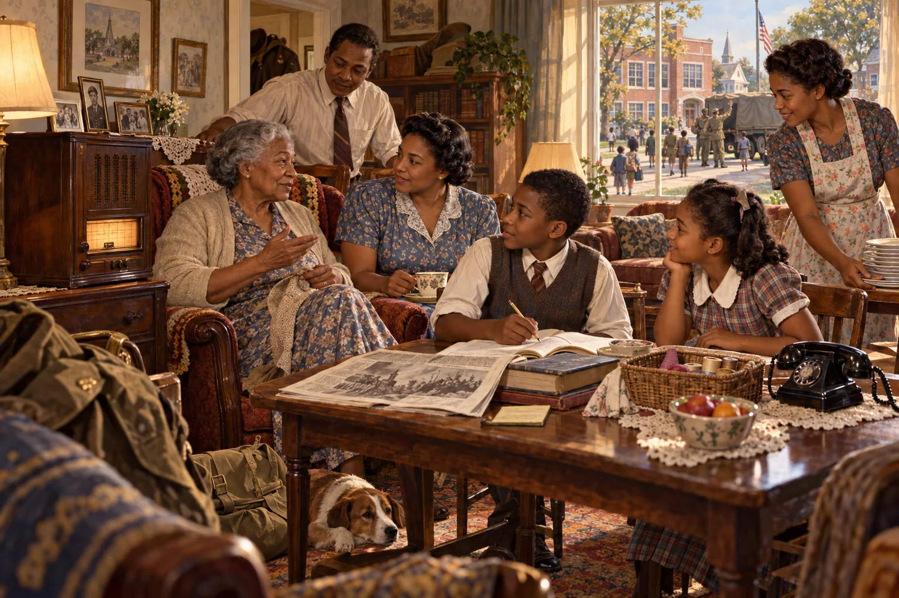
Fifty years after the journey began, Eleanor is sixty-six. Her daughter Ruth is raising children in a home shaped by radio, newsreels, the telephone, mass schooling, wartime separation, and the social changes surrounding the end of World War II. Using these technologies and institutions involves more than operating them.
Ruth's children learn when calling is appropriate, how to evaluate radio messages, whose conversations remain private, and why a familiar voice may still carry misleading information. At school they learn punctuality, obedience, competition, and which futures adults consider respectable.
“The radio voice enters as if invited. I remind the children that a voice can sound familiar without knowing us at all.”
Apply sociology: Which agent of socialization appears here? Which norm is the family teaching? How does technology alter the family’s protective role?
Social structure is the relatively stable pattern of relationships, positions, groups, and institutions that organizes a society. It does not control every choice, but it distributes opportunities, expectations, and constraints before any one person enters the scene.
Face-to-face interaction: a family conversation, classroom exchange, or job interview.
Groups and organizations: schools, workplaces, congregations, clubs, and online communities.
Large institutions and systems: education, family, economy, government, religion, health care, and media.
A status is a socially recognized position a person occupies. A role is the collection of behaviors and obligations people expect from someone occupying that position. The person and the status are not identical: Ruth remains a complex human being while “mother,” “worker,” and “daughter” organize how others approach her. Roles are also negotiated. A status supplies a social script, but people may follow, revise, resist, or be prevented from performing it.
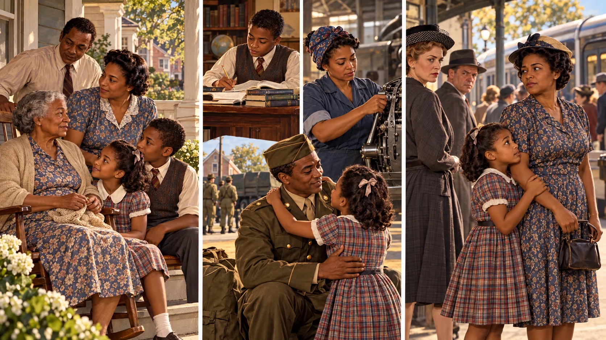
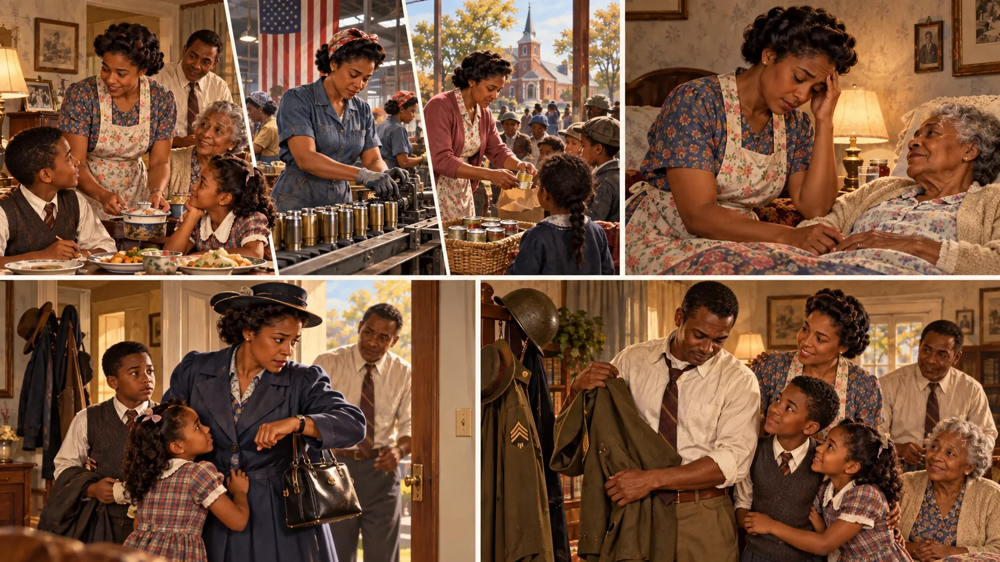
| Concept | Meaning | Example |
|---|---|---|
| Status | A recognized social position. | Student, parent, nurse, citizen, or teammate. |
| Ascribed status | A position assigned at birth or entered involuntarily. | Age category or family relationship. |
| Achieved status | A position entered partly through action, choice, or accomplishment. | Graduate, employee, spouse, or elected leader. |
| Master status | A status that strongly shapes how others identify a person. | An occupation, disability, race, gender, or public reputation may become master status in a particular setting. |
| Status set | All statuses held at one time. | One person may be a daughter, veteran, student, and caregiver. |
| Role | Expected behavior attached to a status. | A student is expected to prepare, participate, and meet deadlines. |
| Role set | Several roles attached to one status. | A teacher instructs, evaluates, mentors, reports, and collaborates. |
| Role strain | Tension among expectations within one status. | A teacher must support students while also enforcing standards. |
| Role conflict | Tension between two or more statuses. | A worker’s shift conflicts with caregiving duties. |
| Role exit | The process of leaving a central role and rebuilding identity. | Retirement, divorce, or leaving the military. |
| Family member in 1945 | Status | Related role expectations | Structural tension |
|---|---|---|---|
| Eleanor | Grandmother, mother, widow, elder | Preserve family memory, advise younger relatives, provide care, and model community traditions. | Her experience carries authority, but age and gender norms may limit her public power. |
| Ruth | Daughter, mother, employee, neighbor | Care for children, manage household needs, meet job expectations, and support community members. | Paid work and caregiving create role conflict when institutions demand her time simultaneously. |
| School-age child | Child, student, sibling, citizen-in-training | Obey adults, learn, complete chores, help siblings, and demonstrate patriotism and good conduct. | School may reward conformity while family circumstances require adult-like responsibilities. |
| Returning service member | Veteran, family member, worker | Resume family relationships, find employment, and embody cultural expectations about strength. | Resocialization may be difficult when wartime routines and identity no longer fit civilian life. |
A social institution is an enduring system of beliefs and practices organized around a basic social need. Family organizes care and kinship; education transmits knowledge and credentials; the economy organizes production and exchange; government distributes authority; religion organizes sacred meanings; health care responds to illness. Institutions are interdependent: a school closing changes family routines, work attendance, transportation, food access, and community life.
Choose one ordinary event, such as missing a class. Identify the statuses and roles involved, one group, one organization, and at least two institutions. Then explain how a decision that looks individual is enabled or constrained by structure.
Technology changes how people obtain food, organize work, store information, and exercise power. These changes reshape social structure, but older arrangements rarely vanish at once. That delay is one form of cultural lag.

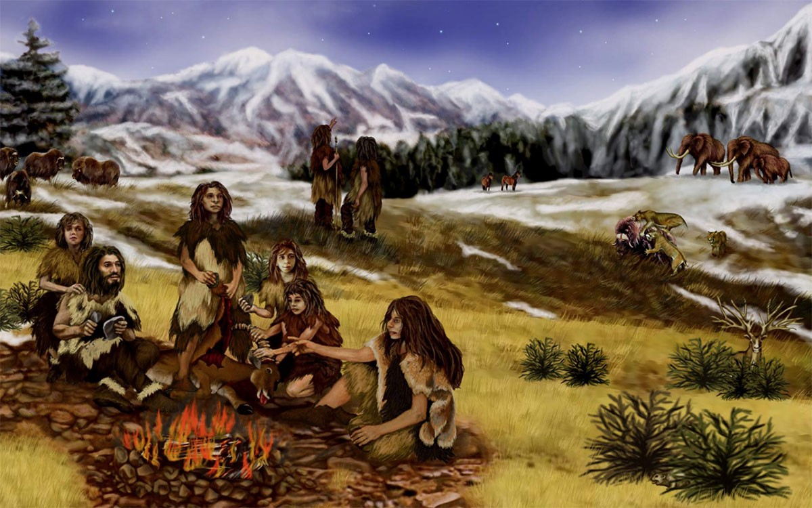
A theory to investigate—not a settled sociological category: Some accounts identify biotechnology as the likely successor to the information revolution. Caroll Hodgson proposes a broader possibility: society may already be entering an AI–quantum social revolution, driven by the convergence of artificial intelligence, quantum research, biotechnology, advanced sensors, and inexpensive high-quality cameras. The proposal should be evaluated by whether these technologies produce durable institutional and cultural transformation—not merely impressive products or headlines.
AI systems now generate language and images, assist scientific research, identify patterns, automate decisions, and alter education and work. In 2025, general-purpose AI systems reached gold-medal-level performance on International Mathematical Olympiad problems. That achievement does not make AI universally intelligent, but it illustrates a rapid expansion of tasks institutions may delegate to machines.
Quantum computing uses physical properties of quantum systems to perform certain specialized calculations differently from classical computers. Recent processors and algorithms have produced important experimental milestones, but useful large-scale quantum computing still faces severe error-correction, scaling, verification, and cost problems. Quantum physics is real; predictions about a near-term quantum society remain hypotheses.
Billions of people now carry cameras, location sensors, clocks, and network connections. This can document violence, disasters, wildlife, weather, public behavior, and unusual events that once disappeared without a record. It also produces enormous quantities of ambiguous material shaped by zoom, compression, autofocus, motion, reflections, perspective, editing, and missing metadata.
Major news organizations have reported government-released images and videos of unidentified anomalous phenomena (UAP). Some cases remain unresolved; others have later been associated with aircraft, balloons, birds, motion parallax, autofocus, vibration, compression, or other sensor effects. “Unresolved” means investigators do not yet have enough reliable information to identify an event. It does not mean the event is unexplainable, extraterrestrial, supernatural, or moving between dimensions.
Some theories in physics mathematically permit additional dimensions, and researchers have proposed experiments that could look for their predicted effects. Scientists have not established that macroscopic objects enter and leave such dimensions, nor has camera footage provided evidence of that process. A serious interdimensional hypothesis would need clear definitions, testable predictions, original high-quality data, independent sensors, reproducible measurements, and results that distinguish it from competing explanations.
| Evidence level | What can responsibly be said | What remains open |
|---|---|---|
| Documented | AI, cameras, sensor networks, and quantum research are advancing and changing organizations. | How extensive, equal, safe, and durable their social effects will become. |
| Scientifically plausible but developing | Quantum technologies may transform selected forms of computing, sensing, communication, chemistry, and medicine. | Which systems will scale, when they will become practical, and who will control their benefits. |
| Unresolved observation | A recording may contain something investigators cannot identify from the available data. | Its cause; better evidence may resolve it or leave it unknown. |
| Speculative interpretation | Extra dimensions appear in some theoretical models. | Whether extra dimensions exist physically and whether any observed phenomenon is connected to them. |
Sociological prediction: If AI, quantum technologies, and distributed observation reshape authority over knowledge—who can see, calculate, verify, decide, and define reality—then they may constitute more than another collection of gadgets. They may reorganize institutions and social relationships enough to become a new social revolution. During that transition, cultural lag can intensify anomie: capabilities change faster than laws, norms, education, employment, and shared explanations. Understanding the difference between evidence, uncertainty, and speculation helps people adapt without denying change or treating every unexplained event as proof of one preferred conclusion.
Rapid change can weaken shared expectations and produce anomie—a condition of normlessness or uncertainty described by Émile Durkheim. New technology may connect millions while leaving rules, protections, and values struggling to catch up.
| Form | What makes it distinct | Example |
|---|---|---|
| Aggregate | People temporarily sharing a place without sustained interaction. | Passengers at a bus stop. |
| Category | People who share a characteristic but may never meet. | First-generation college students. |
| Primary group | Small, enduring, emotionally close relationships. | Family or close friends. |
| Secondary group | Larger, impersonal, goal-oriented relationships. | A class, committee, or workplace team. |
| In-group / out-group | “We” membership contrasted with people treated as “they.” | School rivalry or political identity. |
| Reference group | A group used to evaluate oneself or guide aspirations. | A professional community a student hopes to join. |
| Social network | A web of ties through which information, support, influence, and opportunities flow. | Friends, coworkers, relatives, and online contacts. |
Georg Simmel observed that a dyad depends on both members, while a triad permits coalitions, mediation, or two-against-one pressure. As groups grow, stability may increase but intimacy and individual responsibility can decline. This helps explain diffusion of responsibility, when each person assumes someone else will act.

Solomon Asch asked participants to match the length of a line to one of three comparison lines. The correct answer was usually obvious, but confederates deliberately gave the same incorrect answer on selected trials. Many participants conformed at least once, while others remained independent.
What it demonstrates: unanimity creates normative pressure—the desire not to appear different—and can make people doubt their own perception. A single ally sharply reduces the pressure because the majority is no longer unanimous.
What it does not demonstrate: people are mindless or always conform. The task was artificial, participants varied, and culture and group relationships affect conformity.
Stanley Milgram assigned an adult participant the role of “teacher” and instructed the person to administer what appeared to be escalating electric shocks after errors. No real shocks were delivered, but the participant believed the situation was real enough to experience conflict while an experimenter used standardized prompts.
What it demonstrates: a prestigious setting, gradual escalation, divided responsibility, and direct authority can increase obedience. Variations showed obedience fell when authority was distant, peers resisted, or the learner was closer.
Ethical lesson: deception and severe stress made the study controversial and helped strengthen modern protections involving informed consent, right to withdraw, risk, and debriefing.


Imagine a school committee rushing to adopt facial-recognition software. Identify authority pressure, in-group loyalty, diffusion of responsibility, and possible groupthink. Add one safeguard for each problem.
Socialization is the lifelong process through which people learn culture and develop the skills, values, beliefs, roles, and sense of self needed to participate in society. It is interactive: people receive social messages, interpret them, respond, and sometimes resist or change them.
Early learning, commonly within families and close caregiving relationships. Language, attachment, emotional regulation, trust, routines, and basic norms develop here.
Practicing for a role before entering it, such as learning college expectations, rehearsing for a job interview, or preparing to become a parent.
Learning new expectations when roles or environments change. Starting college, migrating, changing careers, military training, and reentering society after confinement can require resocialization.
Approval, disapproval, rewards, punishment, rules, and laws encourage conformity. Informal control includes praise or ridicule; formal control includes institutional policies and legal sanctions.
Human beings arrive with biological capacities and individual differences, but development requires social relationships and cultural environments. A child may possess the biological capacity for language, yet language develops through exposure, interaction, practice, and responsive communication. Sociology examines how access to these experiences varies.
These categories describe different circumstances and should not be treated as interchangeable. Reports about “feral children” often mix documented evidence with folklore. Cases of severe isolation and institutional deprivation provide stronger evidence that responsive human contact, language exposure, stable caregiving, nutrition, safety, and stimulation are essential to development.
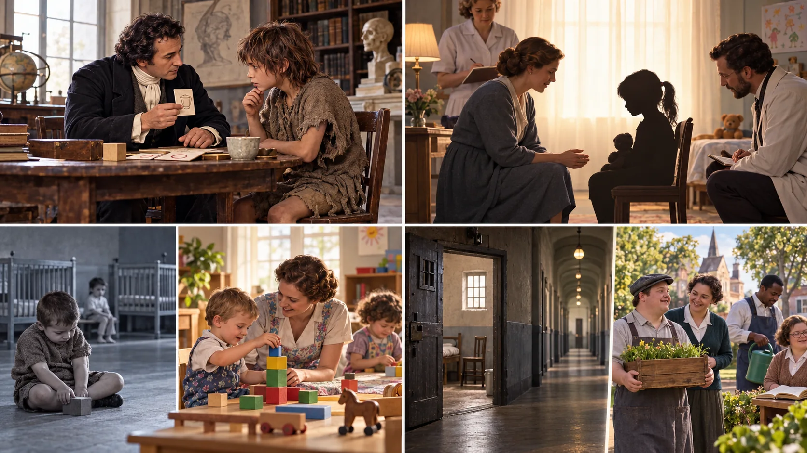
| Term | Meaning | Evidence caution |
|---|---|---|
| Feral child | A historical label for a child alleged to have lived apart from humans, sometimes with animals. | Many accounts are poorly documented or exaggerated. Avoid assuming animal upbringing when neglect, disability, or hidden abuse may better explain the evidence. |
| Isolated child | A child deprived of ordinary human interaction, language exposure, movement, care, or stimulation. | Known cases often involve severe abuse. Researchers cannot ethically create such conditions, so evidence comes from naturally occurring tragedies. |
| Institutionalized child | A child raised in institutional care that may involve rotating caregivers, high child-to-adult ratios, and limited responsive interaction. | Institutions differ. Harm comes from deprivation and instability, not from a building or label alone. High-quality, stable care can support development. |
A boy found in France around 1800 became known as Victor. Physician Jean-Marc-Gaspard Itard attempted to teach him language and social skills. Victor made gains in communication and daily routines but did not develop fluent spoken language.
What the case suggests: Early social and language experience matters. What it cannot prove: Victor’s prior history, age, disability status, and experiences remain uncertain, so no single cause can explain his development.
Authorities discovered “Genie,” a pseudonym, in California in 1970 after years of extreme confinement and abuse. She learned vocabulary and forms of nonverbal communication after rescue, but her grammatical language remained limited.
What the case suggests: Severe deprivation can produce lasting developmental harm. Ethical lesson: Her needs as a child and patient sometimes conflicted with researchers’ interests, demonstrating why protection, consent, continuity of care, and boundaries matter.
Research involving children who experienced severely deprived institutions found higher risks in physical growth, attachment, cognition, language, and social-emotional development. Earlier placement into stable family care generally predicted better outcomes, while individual outcomes varied.
Key point: Development remains possible, but timing, duration, health, quality of later care, and the child’s circumstances influence recovery.
Harold Skeels and Helen Dye studied children living in an Iowa institution during the 1930s. A small group received sustained, responsive interaction from older girls and women in another institutional setting, while a comparison group remained in less stimulating care. The children receiving greater attention showed substantial developmental gains.
Importance: Their work challenged the belief that low early test scores proved fixed incapacity and emphasized how relationships and environment affect development. Caution: The study was small and reflected the methods and terminology of its era; it should not be read as a modern randomized experiment.
In the nineteenth and twentieth centuries, disability was often interpreted through shame, heredity, dependency, and social “fitness.” Some families kept disabled children out of public view; others were pressured or required to place children in poorhouses, asylums, training schools, residential hospitals, or large state institutions. Historical institutions differed, and some staff tried to provide education or care, but overcrowding, rotating caregivers, segregation, coercion, abuse, and extremely limited stimulation could turn institutional life into deprivation.
Popular accounts sometimes call a concealed domestic space a “disappointment room.” The phrase is useful for discussing family secrecy and stigma, but it is not a well-established technical category in the historical record. The documented pattern is broader: disabled or socially disapproved children could be hidden, excluded from school and community, or institutionalized under labels that treated ability as fixed and human worth as hierarchical.
These words covered different institutions and changed over time. A sanitarium was generally associated with long-term medical treatment; an asylum or state school could combine custody, treatment, training, and social control. The name alone does not reveal the quality of life inside.
Families faced stigma, poverty, inaccessible schools, little respite or medical support, professional pressure, and laws that excluded children. Conflict theory asks who had authority to define the child’s needs and whose costs were made invisible.
Disability-rights organizing, family advocacy, investigative reporting, court decisions, special-education rights, community services, and self-advocacy challenged segregation. Community placement succeeds only when housing, health care, education, work, transportation, relationships, and adequate support are actually available.
Scientists could never ethically assign children to severe isolation. Researchers therefore study tragic cases that occurred without scientific control. These cases reveal possible consequences but contain many confounding factors, including malnutrition, physical abuse, uncertain medical histories, and possible disabilities. They illustrate; they do not provide a clean experiment.
A critical period implies a narrow biological window after which a capacity cannot develop normally. A sensitive period describes a time when learning is especially responsive to experience, although later growth may remain possible. Genie’s case contributed to debate about language timing, but one complex case cannot settle that debate.
Structural functionalism: Socialization transmits culture and prepares people to perform social roles. Severe deprivation disrupts both individual development and social participation.
Conflict theory: Ask who controlled the child, whose authority went unchallenged, how resources were distributed, and whether institutions protected the vulnerable or benefited from them.
Symbolic interactionism: Language, gestures, labels, mirroring, play, and shared meanings build the self through repeated interaction.
The self is our awareness of who we are in relation to other people. It develops largely through social interaction: other people name us, respond to us, assign roles, communicate expectations, and provide the social mirrors through which we learn to interpret ourselves. Biology and temperament matter, but no person develops a social self in isolation.
Relatively enduring patterns of thinking, feeling, and behaving. Temperament has biological influences, while experience, relationships, culture, and social conditions also shape personality.
What you think and believe about yourself: your identities, abilities, roles, traits, and answer to “Who am I?” Interaction and reflected judgments help build this picture.
How you evaluate and feel about your worth. Self-concept and self-esteem often influence one another, but they are not identical. A person may recognize exceptional ability or enormous success while still struggling with self-worth.
We imagine how we appear to others, imagine how they judge us, and develop feelings about ourselves from that perceived judgment. The “mirror” may be inaccurate because we respond to what we think others think.
Today: Likes, comments, rankings, filters, and silence can act as digital mirrors.
The I is the spontaneous response; the Me reflects internalized social expectations. The self develops as these parts remain in conversation.
Today: “I want to post this” meets “How will my family, friends, employer, or future self interpret it?”
We imagine how we appear to an audience and may rehearse, dress, edit, filter, or prepare a performance.
We notice words, expressions, applause, silence, likes, criticism, or other signals—and infer what they mean.
Perceived approval can enhance self-feelings.
Perceived disapproval can diminish self-feelings.
Repeated reflections may enter self-concept and self-esteem—even when our interpretation of the audience is incomplete or wrong.
Young children copy gestures, words, and routines without fully understanding the roles behind them. Family members guide development by modeling language, emotional expression, cooperation, and safe behavior.
Real-life example: A toddler holds a block like a phone after watching an adult take calls.
Children pretend to be a parent, teacher, physician, or fictional character and begin viewing situations from a significant other’s perspective.
Family role: Imaginative play lets caregivers explain emotions, fairness, danger, and consequences in a form children can practice.
Children understand that several people occupy related roles governed by shared rules. A player must anticipate teammates, opponents, officials, and the game itself.
Application: Group projects require students to understand their own task and how it affects everyone else.
People internalize the broader expectations of a group or society. The generalized other helps a person imagine what “people,” “the school,” or “the community” expects.
Critical question: Which community’s expectations are being generalized, and who may be excluded from its definition of normal?
Imagine that you take a selfie and consider posting it. Select each thought to identify the part of the self at work.
The I initiates and responds; the Me brings internalized audience expectations into the decision.
A large audience can produce powerful positive reflections, yet ridicule, rejection, exploitation, family conflict, or early adverse experiences may also be internalized. Sociology cannot diagnose a public figure’s private self-esteem from photographs. It can examine the feedback, roles, institutions, labels, and pressures surrounding that person.


No single theory explains the whole person. Each theorist focuses attention on a different developmental question. Open any theory, then open individual stages for definitions, importance, everyday application, and the family’s role.
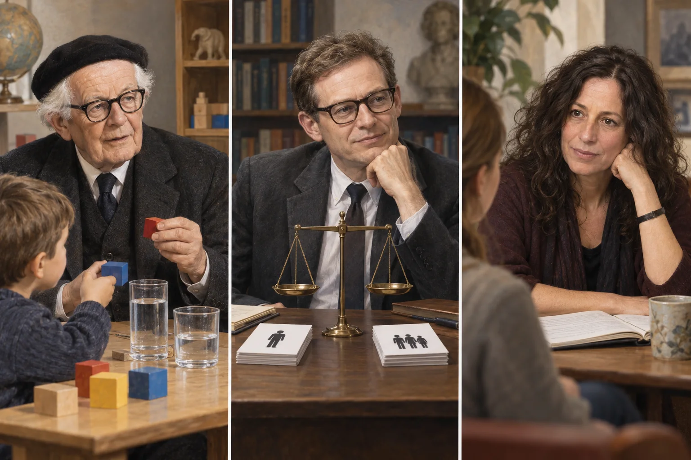
Development occurs within nested environments: immediate relationships; connections between home and school; indirect settings such as a caregiver’s workplace; culture and policy; and historical change. A child develops within society, not outside it.
Family application: When a child struggles, ask not only “What is wrong with the child?” but also what is happening across home, school, neighborhood, work schedules, healthcare, media, and policy.
Children learn by observing models, remembering behavior, attempting it, and noticing its consequences. People are more likely to imitate models they value or see rewarded.
Family application: Adults model conflict, emotion, technology use, prejudice, consent, persistence, and repair. What adults repeatedly do may teach more powerfully than what they say.
Select a situation to compare what different theories help the family notice.
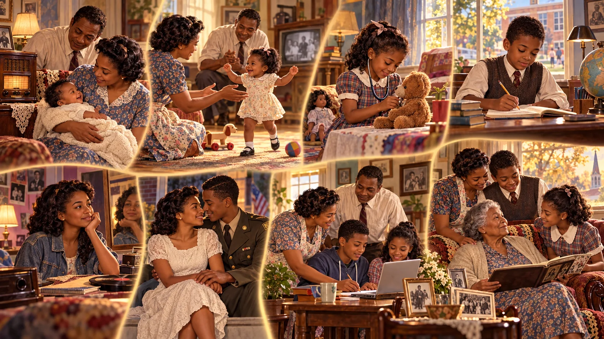
Erikson described development as a lifelong series of social crises. A “crisis” means a central tension, not necessarily a catastrophe. Culture, opportunity, relationships, and institutions affect how people experience each stage; stages are guides rather than rigid deadlines.
Task: Learn whether caregivers and the environment respond reliably to needs. Importance: Consistent care supports security and openness to relationships. Application: Comforting, feeding, and responding do not “spoil” an infant. Family role: Create predictable, warm routines and seek help when stress interferes with caregiving.
Task: Develop controlled independence. Importance: Safe choice builds confidence. Application: A toddler chooses between two appropriate outfits. Family role: Set limits without humiliation; allow manageable choices and mistakes.
Task: Plan, imagine, and initiate activities. Importance: Purpose grows when curiosity receives guidance. Application: A child invents a game and assigns roles. Family role: Encourage questions and play while teaching how actions affect others.
Task: Build competence in valued skills. Importance: Feedback shapes whether effort feels worthwhile. Application: A student practices reading, music, sports, building, or caregiving. Family role: Praise specific effort, provide support, and avoid comparing children as if worth were a ranking.
Task: Explore values, relationships, work, beliefs, and group memberships. Importance: Identity links the private self to social possibilities. Application: Online spaces expand audiences and identity experiments. Family role: Offer belonging and boundaries while allowing age-appropriate exploration.
Task: Form close, mutual relationships without losing the self. Application: Friendship and chosen family matter alongside romantic partnership. Family role: Model consent, respect, repair, communication, and healthy boundaries.
Task: Contribute to future generations through parenting, mentoring, work, creativity, or community care. Application: Generativity does not require biological parenthood. Family role: Share knowledge and care while respecting younger people’s agency.
Task: Interpret one’s life with coherence and acceptance. Application: Storytelling, repair, mourning, and meaning-making can continue. Family role: Include older adults in decisions, preserve dignity, and support connection rather than treating aging as social disappearance.
Piaget examined how children organize knowledge. Later research shows more variation and competence than his original tasks sometimes captured, but the framework still helps adults match explanations to developing reasoning.
Learning occurs through senses and action. Key development: object permanence, the understanding that something continues to exist when out of view. Family application: responsive talk, peekaboo, safe exploration, and naming actions connect experience to meaning.
Symbolic thought and language expand, while perspective-taking and logical operations remain limited. Application: a child may assume others see exactly what the child sees. Family role: use concrete explanations, stories, pictures, repetition, and calm correction.
Children reason logically about tangible situations and understand conservation, classification, and multiple features. Family application: involve children in measuring recipes, sorting recycling, planning time, and discussing concrete consequences.
Abstract and hypothetical reasoning becomes more available, although people do not use it equally in every situation. Family application: discuss values, media claims, long-term consequences, and alternative explanations rather than demanding agreement without reasoning.
Kohlberg studied the reasoning people use when judging moral dilemmas. Gilligan argued that research centered on boys and men could undervalue an ethic of care focused on responsibility and relationships. Justice and care can both inform moral judgment.
Judgments emphasize punishment, reward, and personal consequences. Family role: explain why a rule protects people rather than relying only on “because I said so.”
Judgments emphasize approval, duty, law, and maintaining relationships or order. Application: a student follows academic rules because trustworthy membership in the community matters.
Judgments may evaluate laws against broader principles such as rights and justice. Not everyone uses this form consistently. Family role: discuss cases where laws changed because people challenged injustice.
Moral reasoning may focus on preventing harm and sustaining relationships. Application: ask both “What is fair?” and “Who may be hurt, unheard, or abandoned?” Avoid treating care as naturally female; gendered socialization and research design influence observed differences.
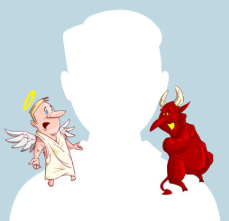
Many specific Freudian claims lack modern empirical support, but sociology still uses his three-part model as a historical way to discuss desire, social rules, and internal conflict.
Immediate drives and gratification: “I want it now.”
Practical negotiation with reality: “How can I respond safely and effectively?”
Internalized rules and ideals: “What should a good person do?” Families and institutions help build this moral voice, although the rules taught may reproduce cultural bias and inequality.
Ekman’s cross-cultural research argued that some facial expressions have broad recognition, while culture teaches display rules about when, where, and how strongly people should show emotion.
A capacity for emotion can have biological foundations while families, peers, workplaces, and cultures teach the meanings and acceptable expression of feelings.
One family may encourage open grief while another values private restraint. Online communication removes many facial and vocal cues, increasing the chance of misinterpretation.
A fleeting expression does not provide a reliable window into guilt, honesty, or intent. Context matters, and people vary. Do not use facial-expression claims to diagnose or accuse someone.
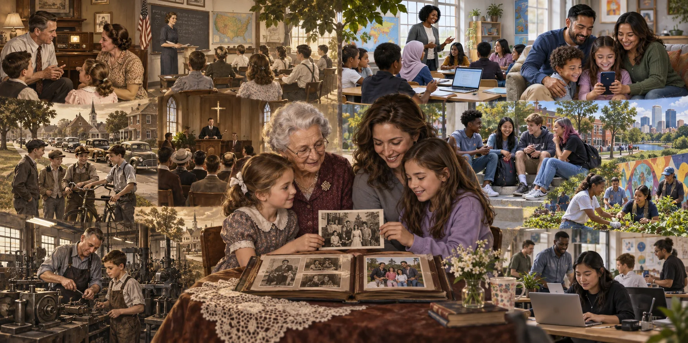
Teaches language, care, trust, identity, norms, beliefs, emotion, safety, gender expectations, and class-related habits. Families also interpret messages from other institutions.
Provides formal curriculum and a hidden curriculum of punctuality, competition, cooperation, authority, schedules, and evaluation.
Offer belonging and practice with independence. Peer groups can support exploration and solidarity, but may also enforce conformity through approval, exclusion, or ridicule.
Teach scripts for beauty, success, conflict, gender, consumption, and relationships. Algorithms also shape which models and messages appear repeatedly.
May transmit moral frameworks, rituals, identity, service, authority, and belonging. Experiences differ across and within traditions.
Socializes adults into occupational roles, emotional expectations, dress, language, hierarchy, teamwork, and ideas about professionalism.
Manifest socialization is intended: a caregiver directly teaches a child to look both ways before crossing. Latent socialization is an unintended lesson: the child notices who performs housework, whose voice ends arguments, or which emotions adults permit.
| Agent | Eleanor’s family in 1945 | Families today | Continuing sociological question |
|---|---|---|---|
| Family | Interprets radio news, teaches household roles, manners, safety, and obligations to kin and community. | Interprets online content, negotiates privacy and screen use, and guides children through diverse identities and networks. | Who provides care, authority, protection, and belonging? |
| School | Uses age-graded classrooms, bells, textbooks, patriotism, and teacher authority. | Adds digital platforms, standardized data, collaborative learning, and online communication. | Which knowledge and behavior are rewarded? |
| Peers | Gather through neighborhoods, schools, work, clubs, worship, movies, and dances. | Move between in-person groups, games, group chats, fandoms, and social platforms. | How do approval and exclusion shape identity? |
| Media | A limited number of radio, film, newspaper, and advertising gatekeepers reach large audiences. | Streaming, creators, targeted advertising, algorithms, and users all circulate messages. | Who selects the repeated models people see? |
| Work | Apprenticeship, factory routines, military experience, offices, farms, and gendered occupations teach adult conduct. | Service work, professional settings, remote teams, automation, and platform labor teach changing expectations. | Whose behavior is defined as professional? |

In Eleanor’s era, stereotypes about gender, race, class, disability, nationality, age, and “respectability” influenced education, work, housing, citizenship, and family roles. Contemporary media may reject some older stereotypes while reproducing others through casting, headlines, coded language, data categories, and recommendation systems. Counter-socialization occurs when families, educators, peers, and communities explicitly question a stereotype, supply missing histories, and provide repeated contact with people who contradict the oversimplified image.
Caregivers cannot remove every risk, but they can build the child’s skills, relationships, judgment, and pathways to help. Protection works best as continuing socialization rather than one frightening conversation.
Show respectful communication, consent, boundaries, repair after mistakes, privacy, and responsible technology use.
Use developmentally appropriate language for bodies, feelings, unsafe requests, secrets, manipulation, and how advertising or algorithms seek attention.
Make disclosure safe. A child needs to know that asking for help will bring calm support rather than automatic blame or loss of every social connection.
Use privacy settings, family media plans, age-appropriate access, shared review, and gradually expanding independence. Explain the reason for limits.
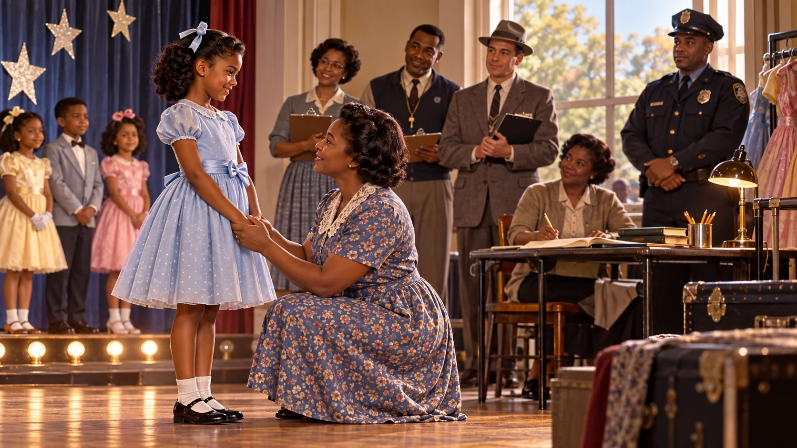
Modeling, pageantry, acting, music, competitive sports, and online content can offer creativity, friendship, discipline, and opportunity. They can also place children inside adult-controlled industries where attention, money, appearance, travel, and access create unequal power. Support participation when it reflects the child’s sustained interest—not a caretaker’s identity, income goal, or preference—and check regularly that the child still wants to continue.
Give the child age-appropriate information, meaningful choices, permission to refuse physical contact or a performance, and a way to leave without shame.
Know who has access, avoid isolated one-on-one situations, supervise communication and travel, and insist on clear rules for changing areas, photography, coaching, and auditions.
Review contracts independently, protect earnings, limit identifying information, and ask who owns and can redistribute a child’s image, voice, location, or data.
Protect schooling, rest, friendships, medical care, and unstructured childhood. Success should never require chronic fear, pain, secrecy, dieting, humiliation, or isolation.
Law-enforcement agencies have documented coded symbols used by some offenders, but an image or symbol alone is not proof of abuse. Families should focus on behavior, context, grooming patterns, and boundary violations—and involve trained investigators rather than confronting a suspected offender themselves. Contemporary reporting resource: National Center for Missing & Exploited Children CyberTipline.
Sex refers to biological traits, which are more varied than a simple binary suggests. Gender refers to the identities, roles, meanings, and expectations societies build around perceived sex. Gender socialization begins when people respond differently to children’s names, clothing, bodies, emotions, toys, and behavior—and it continues throughout life.
Caregivers may assign chores, freedoms, colors, toys, emotional rules, and future expectations differently. They can also deliberately expand children’s choices.
Course tracking, sports, dress codes, praise, teasing, and friendship groups reward some performances of gender and discourage others.
Stories, advertising, influencers, games, and recommendation systems repeatedly model appearance, work, romance, power, and family roles.
Hiring, pay, leave policies, occupational segregation, caregiving expectations, and harassment can turn cultural beliefs into unequal outcomes.
| Lens | Central question | Gender example |
|---|---|---|
| Structural functionalism | How do patterned roles contribute to stability, and when do they become dysfunctional? | Traditional divisions may coordinate labor, but rigid roles can waste talent and limit adaptation. |
| Conflict and feminist theories | Who gains resources, authority, safety, and freedom from an arrangement? | Patriarchy describes a system in which men as a group hold disproportionate power. Feminist movements have challenged exclusion in voting, education, work, health, and bodily autonomy. |
| Symbolic interactionism | How is gender created and negotiated in everyday interaction? | People “do gender” through language, appearance, body movement, tasks, and others’ reactions. |
Choose a toy aisle, school rule, advertisement, game, or short video. What gender script appears? Who rewards it? What sanction discourages alternatives? Redesign the message so it expands rather than restricts possible selves.
Formal education is planned instruction within an organized system. Industrialization increased demand for literacy, punctuality, specialized skills, and standardized credentials, helping mass schooling expand. Education can increase opportunity and social integration while also reproducing inequality.
Intended outcomes include teaching knowledge and skills, transmitting culture, preparing people for work and citizenship, and awarding credentials.
Unintended outcomes include friendship networks, childcare, delayed entry into the labor force, relationship formation, and learning how institutions operate.
| Concept | How it works | Sociological question |
|---|---|---|
| 📚 Cultural transmission | Schools pass language, history, practices, values, and shared symbols to a new generation. | Whose culture becomes official knowledge? |
| 🤝 Social integration | Students encounter common rules and people beyond their household. | Who experiences belonging, and who is marked as outside? |
| 🚪 Social placement and gatekeeping | Grades, tests, recommendations, and degrees channel people toward opportunities. | Do the measures identify ability, prior advantage, or both? |
| 🛤️ Tracking | Students are placed into different instructional paths. | Does placement provide support or lock expectations into unequal futures? |
| 🕰️ Hidden curriculum | Schedules, discipline, competition, and authority teach unstated institutional lessons. | Which workplace and citizenship behaviors are being rehearsed? |
| 🏭 Correspondence principle | School organization may mirror workplace hierarchy and discipline. | Does education liberate learners or train them to accept unequal authority? |
In Eleanor’s era, rows of desks, bells, dress expectations, patriotic rituals, and unequal access could teach obedience and social rank without naming those lessons. Contemporary students may learn collaboration and digital fluency, but they may also learn that constant connectivity, surveillance, self-presentation, and rapid response are normal. The hidden curriculum is not a conspiracy; it is the collection of unstated lessons built into routines, rewards, architecture, discipline, and technology.
A credential may protect the public by demonstrating necessary training, or it may become a costly gate that screens people without improving job performance. Functionalists ask what competence it verifies; conflict theorists ask who can afford it and who benefits when requirements rise.
The cycle is social rather than magical: an expectation can alter warmth, wait time, difficulty of work, correction, and encouragement; those experiences can affect performance; the result may then appear to confirm the original belief. Expectations influence outcomes but do not determine a student’s destiny.
Ray Rist observed a kindergarten classroom in which children were grouped early according to teachers’ judgments that were entangled with perceived ability, appearance, behavior, and social class. Groups then received different seating, attention, pacing, and opportunities to speak. The study illustrates how a label can organize later interaction until the institution begins producing evidence that seems to justify its first judgment. Labeling does not make outcomes inevitable, but repeated institutional reactions can accumulate—and fair reassessment can interrupt the cycle.
A district finds that one student group is placed in advanced courses less often despite similar prior achievement. State a hypothesis, identify evidence needed, propose one policy change, and name an outcome that would show whether the change worked.
Socialization continues as people enter new roles and institutions. The cards now appear directly in the chapter so the images and text remain available without opening another page. Select any life stage to reveal its sociological explanation.
Industrialization, schooling laws, developmental science, and child-protection movements helped construct the modern expectation that childhood should include education, care, play, guidance, and protection.
Biology matters, but laws, schools, peer cultures, media, work rules, and families organize what adolescence means and how much independence young people receive.
Extended education, housing costs, changing work, and delayed family transitions have made movement into established adult roles longer and less uniform for many people.
Work, caregiving, relationships, and community roles often intensify. Parenthood, migration, disability, divorce, or job loss may require resocialization.
People may reassess work, family, health, identity, and future plans. Experiences vary by occupation, culture, discrimination, health, and access to resources.
Retirement rules, medicine, family structure, and cultural beliefs organize later life. Ageism can wrongly treat older adults as one dependent category.
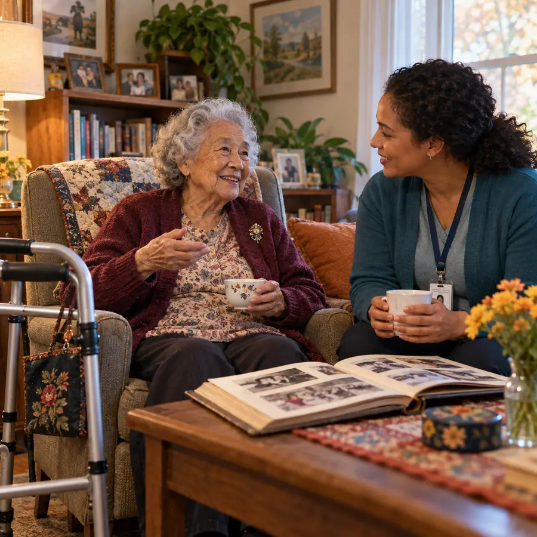
Advanced older ageNeeds and abilities remain diverse. Dignity, autonomy, accessible communities, meaningful roles, care, and social connection remain important at every age.
Erving Goffman used total institution for a setting where many parts of life occur under one authority and daily activity follows a tightly managed schedule. Prisons, some military training environments, some residential treatment settings, and historical asylums vary greatly, but may use identity stripping and new routines to produce resocialization. Sociologists ask who controls the process, whether rights and dignity remain protected, and how people rebuild roles after leaving.
Personal possessions, clothing, privacy, names, schedules, and earlier relationships may be reduced or controlled so an institutional identity becomes more important.
Repeated schedules, rules, surveillance, rewards, punishment, peer expectations, and institutional language teach what the new setting considers normal.
Leaving the institution does not simply restore an earlier life. Family relationships, technology, work, laws, stigma, and the person’s own identity may have changed.
The group concepts introduced here prepare us to ask who defines deviance, how labels change identity, and how societies enforce norms.
In-groups and out-groups shape belonging, loyalty, stereotypes, and whose rule-breaking receives attention. Organizations turn informal judgments into records, classifications, and sanctions.
Deviance means violating a social norm, not automatically causing harm or breaking law. Definitions vary by group, place, time, and power. Social reactions can turn a behavior or identity into a lasting label.
Families, peers, schools, workplaces, media, medicine, religion, and the legal system encourage conformity through informal and formal sanctions. Conflict theorists ask whose norms become law and whose behavior receives surveillance.
Eleanor’s family did not simply learn to operate a telephone. Their statuses and roles were organized by family, school, work, government, and media. They learned a new social world around the technology: etiquette, privacy, access, danger, and responsibility. Today’s tools change faster, but the process remains familiar: people construct meanings, teach them through groups, embed them in institutions, and pass them to the next generation.
Human development needs more than biology. It needs sustained relationships, language, safety, opportunities to practice roles, and guidance that grows with the learner. Socialization helps society continue, but it can also reproduce inequality. Sociology gives us the tools to decide which lessons deserve transmission and which need to change.
Design the social structure of your ideal society. Show how its statuses, roles, groups, and institutions connect, then explain how people learn expectations, develop identities, and gain access to education and opportunity.
Possible concepts: social structure, status, role, social institution, socialization, family, education, peer groups, social networks, gender roles, resocialization, and hidden curriculum.
Slide requirements: Approximately 100–150 words, at least four bold concepts, one purposeful visual, and approximately 3–6 APA in-text citations.
This section builds transferable skills for recognizing socialization, status, roles, development, institutions, group influence, and unequal opportunity across the life course.
| College pathway | Section benefit | At work |
|---|---|---|
| 🍎 Education | Recognize development, socialization, hidden curriculum, labeling, and unequal educational pathways. | Make expectations visible, support different developmental needs, and check whether tracking or labels restrict opportunity. |
| 🩺 Medical and nursing | Connect life-course development, family roles, culture, institutions, and communication. | Adapt explanations and care to developmental stage, family context, disability, and the patient’s social environment. |
| 🤲 Caregiving and human services | Understand family guidance, trauma, institutional deprivation, total institutions, and resocialization. | Assess safety while protecting dignity, relationships, communication, autonomy, and access to community life. |
| 🧠 Counseling and behavioral health | Place identity and development within attachment, interaction, roles, family relationships, and social institutions. | Distinguish developmental or social differences from personal failure and build support across home, school, work, and community. |
| 🦷 Rehabilitation and dental | See how age, ability, family socialization, status, roles, and prior experiences influence participation in care. | Use accessible communication and create realistic routines that patients and support networks can sustain. |
| 🚒 Public safety | Analyze authority, obedience, social control, total institutions, family protection, and community trust. | Explain rules clearly, avoid dehumanizing labels, recognize vulnerability, and support safe reintegration. |
| 🔧 Skilled trades | Recognize workplace roles, status hierarchies, occupational socialization, networks, and apprenticeship culture. | Use the ideas when entering homes, explaining options, mentoring coworkers, resolving conflict, and serving diverse customers. |
| ✂️ Personal-care services | Understand identity, role performance, family influence, consent, boundaries, and life-course differences. | Use the ideas to maintain consent and boundaries, read client needs, avoid bias, and create a respectful environment. |
| 🔬 STEM | Connect technology and research to development, education, socialization, privacy, access, and human diversity. | Use the ideas to ask better questions and design research, data, products, systems, and teams for real human diversity. |
Postwar sound: learning age, race, and belonging
In the 1950s, records, radio, television, cars, and jukeboxes helped a distinct youth market grow. Elvis Presley’s success can be studied alongside the Black gospel, blues, and rhythm-and-blues traditions that shaped rock and roll. The sociological question is larger than whether one performer “stole” a style: how did segregated institutions, record labels, broadcasting, and unequal access to national audiences distribute recognition and wealth?
First listen: Big Mama Thornton’s “Hound Dog”
Willie Mae “Big Mama” Thornton recorded “Hound Dog” in 1952, and it became a major rhythm-and-blues hit in 1953. Her performance provides the starting point for examining how race, gender, voice, genre, promotion, and access to national audiences influence whose version of a song becomes most widely remembered.
Listen and observe: notice Thornton’s vocal authority, phrasing, interaction with the musicians, clothing, gesture, and control of the performance. What gender and racial expectations might audiences have brought to this performance? Students who cannot stream the video can use the written description and questions.
Second listen: Elvis Presley’s “Hound Dog”
Elvis Presley recorded a substantially reworked version in 1956. The comparison is not simply a contest over which performance is “better.” It is evidence for studying how genre, race, gender, television, marketing, and access to a mass youth audience shape cultural memory.
Listen and observe: compare tempo, vocal delivery, movement, staging, audience response, and the performer’s public image. Which differences come from artistic interpretation, and which become sociologically important because of the institutions carrying the performance to a national audience?
Compare the two versions: innovation, access, and memory
Make a claim: Is this best understood as cultural diffusion, unequal opportunity, appropriation, artistic reinterpretation, or a combination? Support the answer with evidence from both performances and the surrounding institutions.
Socialization
Peers and mass media taught young people dress, dance, slang, taste, and the boundaries of respectable behavior.
Conflict
Gatekeepers could amplify white performers while limiting the reach and earnings of Black originators and performers.
Life course
A song may symbolize rebellion to adolescents, danger to parents, nostalgia later in adulthood, and history to a new generation.
1965 bridge: Cash, Rouse, and recognition
Johnny Cash’s recording of “Orange Blossom Special” carried a 1938 song into a new media era. By locating Ervin Rouse, inviting him to perform, and naming him in the album notes, Cash used celebrity status to return public recognition to the songwriter. How can a higher-status person act as an ally without making the story about himself?